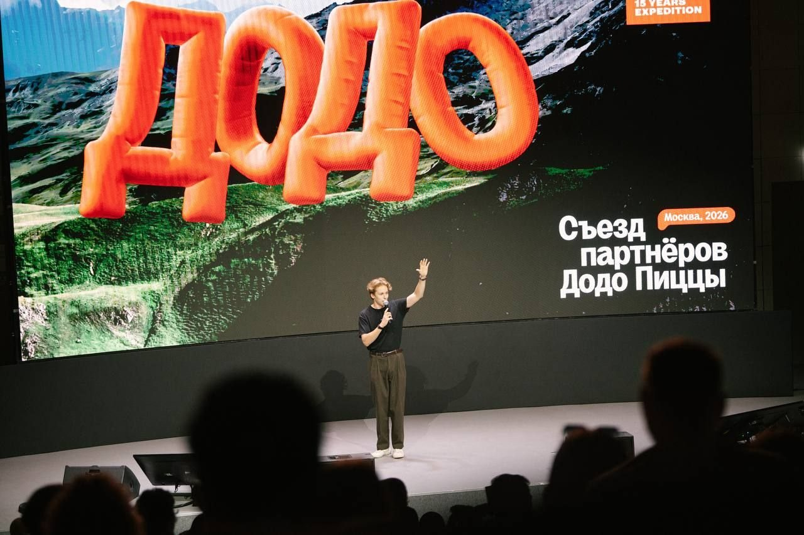
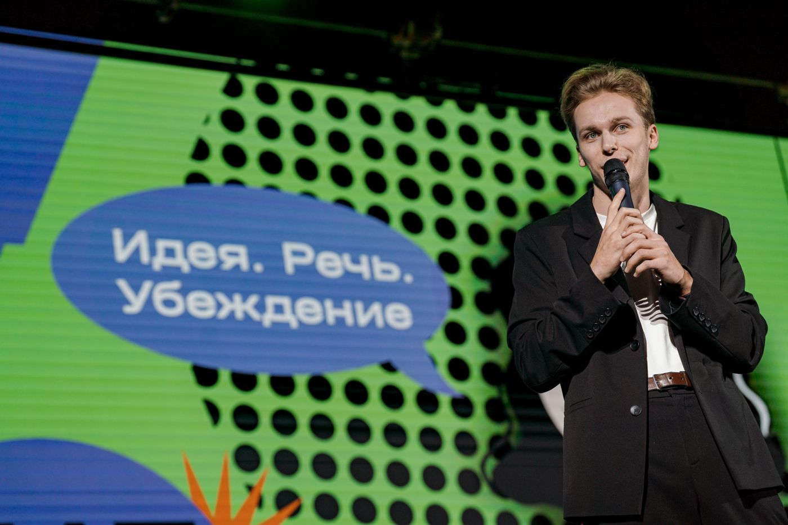
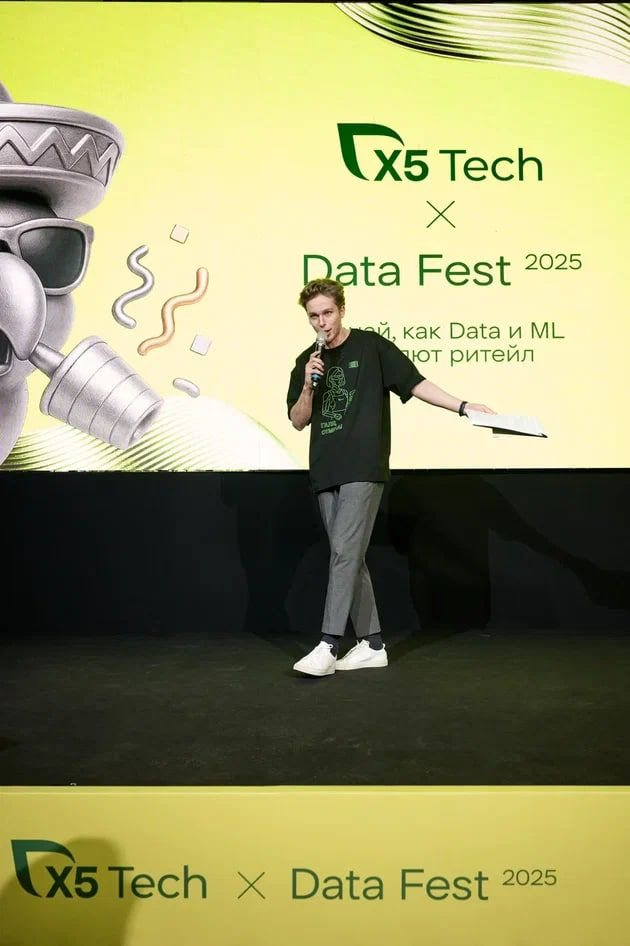
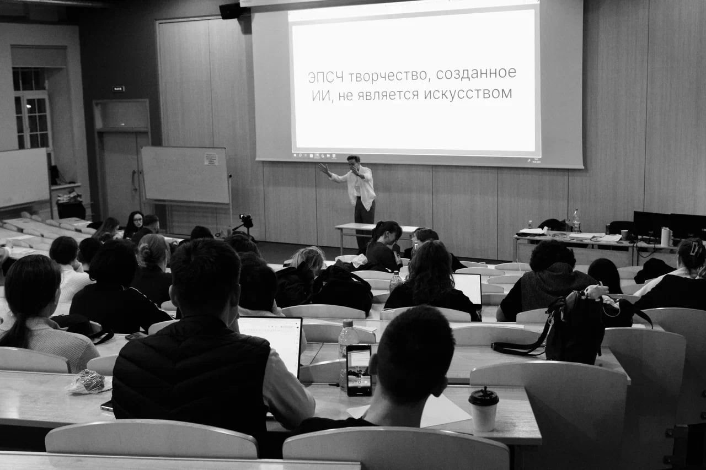
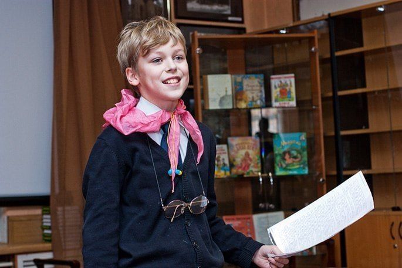
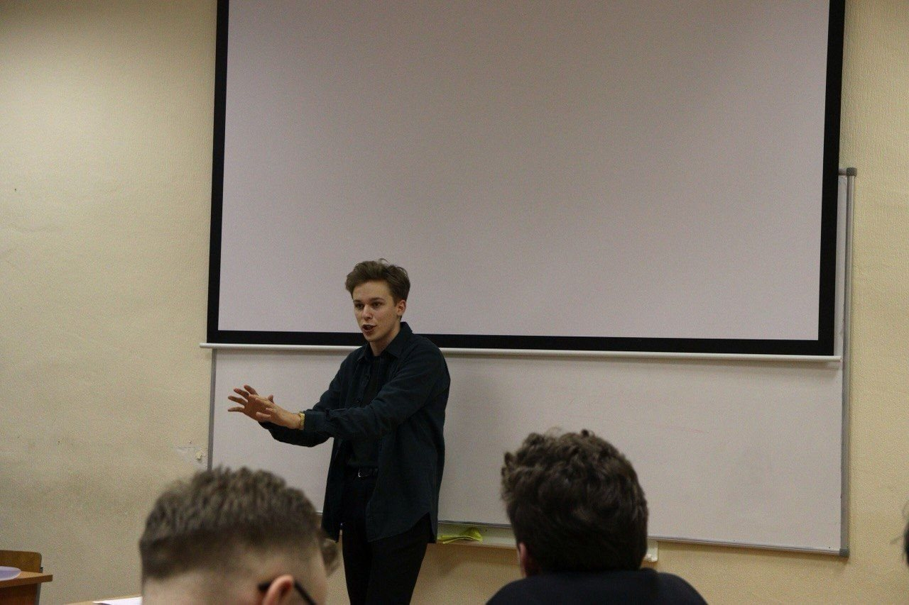
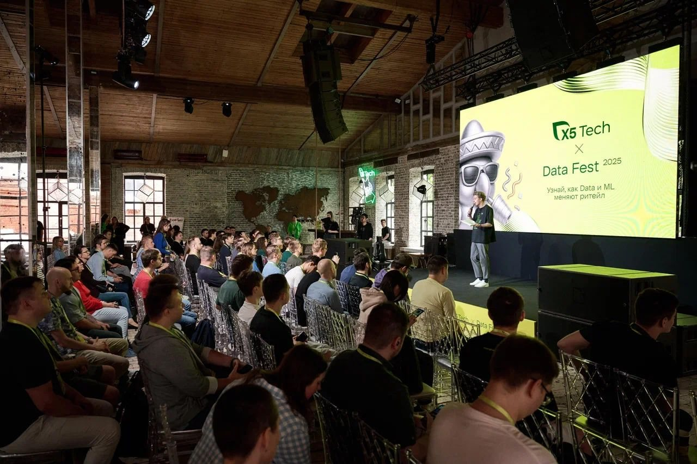

Работаю не только с тем, как человек выступает, но и с тем, что он говорит: главная мысль, структура, аргументы и история. Готовлю спикеров к конференциям, обучаю команды и веду мероприятия — на русском и английском.
4000+ человек в зале на мероприятиях, которые я вёл
Больше 7 лет в выступлениях и дебатах. Работал с командами VK, Яндекса, OZON, Т-Банка, Газпром нефти, Ростелекома, Асконы, inDrive, Manychat, Sumsub, ecom.tech, Додо, X5 Tech и MC Bauchemie. Мои спикеры выступали на TEDx Talks, HighLoad, CodeFest, Heisenbug, Frontend Conf, Mobius, VK JT и EuroPython.
( задачи )
С чем ко мне приходят

Съезд партнёров Додо
подготовить
выступление к конференции, питчу или TEDx
Готовый доклад: 1–2 встречи С нуля: обычно 3–5 TEDx, EuroPython, HighLoad
Для экспертов, руководителей, спикеров и организаторов конференций. В итоге — выступление с понятной главной мыслью, логикой и аргументами. И спикер, который понимает, что хочет сказать аудитории, и знает, как это сделать.
подробнее
Разбираемся с задачей: кто аудитория, что ей важно и какую мысль она должна унести
Проверяем аргументы, отбираем содержание и убираем лишнее
Собираем структуру: примеры, объяснения, истории и переходы
Репетируем: подача, темп, интонация
Готовимся к вопросам и дорабатываем слабые места
обучить
команду выступать, презентовать идеи и отстаивать позицию
От воркшопа на 2 часа до программы Онлайн и офлайн VK: 4 воркшопа и 3 курса
Для HR, L&D и руководителей команд. Публичные выступления, презентации, функциональная риторика, аргументация и убеждение, дебаты.
подробнее
Я не очень люблю лекции как формат, хотя сам могу часами рассказывать об аргументации. Слушать, как нужно что-то делать, — не самый надёжный способ научиться. Поэтому короткая теория у меня сразу идёт в практику: участники объясняют сложное, отвечают на неудобные вопросы, питчат, спорят и получают конкретную обратную связь — что получилось, что нет и как сделать лучше.
Для организаторов конференций и внутренних событий. Беру на себя всё, что происходит на сцене и в зале: спикеров, вопросы, тайминг и неожиданности.
подробнее
Веду мероприятия на русском и английском. Площадки: Крокус Экспо, кластер «Ломоносов», Сибур Арена.
фасилитировать
командные и стратегические сессии
Сертифицированный фасилитатор ICP-ATF
Помогаю команде договориться, принять решение и выйти с планом. На русском и английском.
подробнее
Онлайн и офлайн, от одной сессии до серии встреч.
( подход )
Как я работаю
Сначала разбираемся, что именно хотим сказать
«Смогли найти и подсветить важные логические промахи в докладе»спикер Яндекса
как это работает
Часто у спикера есть всё для хорошего выступления: исследования, цифры, примеры, опыт. И десяток деталей, которые жалко выкинуть. Проблема в том, что аудитория этих лет с нами не провела.
Поэтому сначала разбираемся, что мы хотим сказать, почему слушателям должно быть не всё равно и на каких аргументах держится идея. Иногда для этого нужно не добавлять новое, а безжалостно сокращать написанное. И только потом — как всё это произнести.
Не пытаюсь сделать из всех «правильных» спикеров
«Женя не давит и не настаивает на какой-то форме подачи, а обсуждает варианты»спикер Яндекса
как это работает
Вокруг выступлений полно универсальных советов: уверенно стоять, правильно жестикулировать, шутить — желательно всё сразу. Но люди разные, и то, что естественно у одного, у другого выглядит как неловкая роль.
Поэтому я не буду лепить из вас Стива Джобса или Тони Роббинса. Разберём, какие привычки помогают удерживать внимание, а какие мешают, и найдём приёмы для следующего выступления. Не обязательно становиться другим человеком, чтобы стать хорошим спикером.
Обоснованно критикую, последовательно исправляю
«Обратная связь была подана в виде хорошо структурированных actionable items»спикер VK
как это работает
В спортивных дебатах есть принцип: конкретное всегда лучше абстрактного. Между «тут нужно доработать» и пониманием, как именно, — большая дистанция.
Поэтому я не только замечаю слабые места, но и предлагаю решения: формулировку вывода, пример для сложной мысли, связку между аргументами. Проговорю фрагмент речи, чтобы показать, где акценты. После консультации остаются не только замечания, но и готовые решения.

Не обязательно становиться другим человеком, чтобы стать хорошим спикеромЖеня Акулов

Веду X5 DataFest 2025
( обо мне )
Сначала много выступал сам. Теперь помогаю готовиться другим
В профессию тренера и консультанта я пришёл из соревновательных дебатов, которыми занимался в студенческие годы. Там недостаточно уверенно и красиво говорить: приходится быстро разбираться в незнакомых вопросах, строить аргументы, слышать возражения и отвечать на них.
Сегодня этот опыт помогает мне работать с экспертами, руководителями и командами.
Старший консультант BEsmart
Преподаю в ИМИСП и ВШЭ
Сертифицированный фасилитатор ICP-ATF
( дебаты )
Дебаты: когда аргументацию приходится применять, а не обсуждать

Дебаты — интеллектуальная игра. За несколько минут нужно разобраться в сложной теме, подготовить аргументы в защиту позиции, доставшейся по жребию, и поспорить с другой командой по правилам.
Это идеальная тренировка аргументации, работы с возражениями, скорости мышления и публичной речи.
Дебаты со мной выбирают ИМИСП, VK, Яндекс, Самокат и другие. Проводил всероссийский чемпионат по дебатам в Гимназии Примакова — 32 региона.
Дебатная игра
на корпоративе или конференции
Тренинг по аргументации
инструменты и сразу практика
Корпоративный турнир
команды соревнуются между собой, темы и механика под вашу аудиторию
Дебатный интенсив
серия встреч: инструменты аргументации, тренировки и финальная игра
Дважды плей-офф чемпионата мира WUDC (2022 и 2024) · 20+ побед и титулов лучшего спикера на всероссийских и международных чемпионатах · главный судья крупнейших мероприятий по дебатам
( кейсы )
Что получилось
50 → 15минут
TEDx на Кипре · на английском · 5 встреч
Превратили 15 лет опыта в 15-минутную историю об образовании детей
Полина Мальцева, одна из создателей школы «Летово». Нашли главную мысль, отфильтровали материал, добавили личные истории и отрепетировали текст так, чтобы он звучал естественно на неродном языке.
Дебаты для команды, которую сложно удивить тренингами, и рекордные оценки обратной связи
Многие участники уже прошли немало тренингов, поэтому мы не стали строить программу вокруг очередной лекции. Участники знакомились с инструментами аргументации, пробовали их в дебатах и получали обратную связь. После саммита гендиректор заинтересовался идеей корпоративного дебатного клуба.
От пропущенной футбольной тренировки до чемпионата мира по дебатам и подготовки топ-спикеров
С восьми лет я был довольно громким проказником-спортсменом: занимался футболом и лёгкой атлетикой, мечтал сыграть за «Барселону» и забить гол с передачи Лео Месси.
В 12 лет я совершенно случайно вышел в финал конкурса чтецов, на который пошёл с прагматичной целью — легально прогулять уроки. Ради финала в Москве пришлось пропустить предматчевую тренировку. Команда это решение не оценила. Зато я обнаружил, что выступать мне нравится не меньше, чем играть в футбол.
что было дальше
В университете я увлёкся парламентскими дебатами. Сначала много спорил на тренировках клуба Вышки, потом начал ездить на турниры по России и за рубеж, а со временем — регулярно на них побеждать. Постепенно меня стало интересовать не только то, как выиграть раунд, но и почему одни аргументы убеждают, а другие рассыпаются при первом возражении.
Так дебаты превратились в профессию. Сейчас проекты очень разные: от подготовки пятнадцатиминутного доклада до большой конференции или всероссийского чемпионата по дебатам для школьников. Но меня по-прежнему интересует одно: как помочь людям разобраться в собственных мыслях и объяснить их другим. Желательно так, чтобы никому не приходилось догадываться, что именно им хотели сказать.
Мир полон невероятных идей, которые должны быть услышаны. Я помогаю их авторам донести их до тех, кому они нужны.

12 лет, финал конкурса чтецов
Работа
Старший консультант по подготовке спикеров, BEsmart
Преподаю
DBA в ИМИСП, ВШЭ, Академия талантов, Гимназия Примакова
Образование
Магистр политологии НИУ ВШЭ, Comparative Politics of Eurasia, диплом с отличием

Парламентские дебаты и чемпионат мира по дебатам

Лекции и тренинги по дебатам для студентов и команд
Выступления на больших сценах и обучение спикеров
( отзывы )
Что говорят
«Его сессии и занятия неизменно получают наивысшие баллы в анкетах обратной связи, а участники открыто называют его блоки одними из самых практически значимых и полезных за всю программу»
читать полностью
Наша аудитория — собственники бизнеса, генеральные директора и топ-менеджеры крупных компаний. Люди с большим опытом управления и естественным скепсисом к внешним экспертам. Включить такую аудиторию в реальную работу, заставить снять «погоны» и выйти из зоны комфорта — непростая задача. Женя справляется с ней безупречно.
То, как Женя отвечает на провокационные, сложные или скептические вопросы из зала, — само по себе мастер-класс по аргументации. Он не уходит от острых тем, никогда не давит авторитетом, а раскладывает логику оппонента структурно, корректно и доказательно.
«Женя, я выступила, и я ничего не забыла. И я шла чётко по структуре, которую мы с тобой сделали. И я была в тайминге»
«64 руководителя из региональных филиалов, инженерного склада ума, которые не работают публично. Программа стала проектом года федерального уровня в компании, обойдя десятки конкурентов»
Евгения Игошина управление по обучению, Ростелеком
«Мы под большим впечатлением от формата дебатов, и у меня появилось желание запустить внутри компании клуб дебатов»
Константин Горелов PLITONIT (MC Bauchemie) · кейс →
«Женя сочетает питерский такт и порядочность с высокой организованностью, системностью и ответственностью»
Анна Мара Центр лидерских программ, Гимназия Примакова
«Я вчера выступила!!! Ко мне подходили люди и спрашивали: это точно моё первое выступление?? Я получила гору фидбека, и меня позвали ещё на две конфы! Спасибо тебе!!!»
Дарья Корсакова Manychat, после EuroPython · полностью →
«Женя за час помог собрать и уяснить знания, на освоение которых потребовалось бы несколько лет и выступлений»